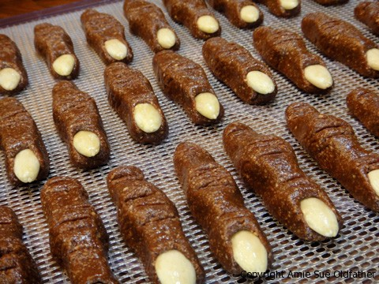
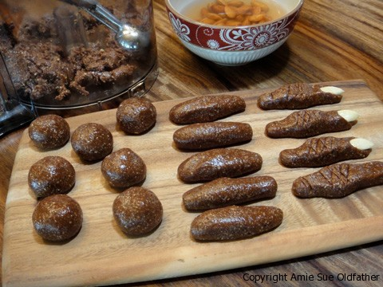

Witches’ Finger Cookies
~ raw, gluten-free, dairy-free ~
It’s getting close to that time of the year… Halloween! My husband and I are throwing our 3rd annual Halloween Party this year, and it is always my goal to serve a lot of raw, healthy foods!
This healthy cookie is disguised as an ole’ creepy witches’ finger! Finger licking good?! These peanut butter, chocolate cookies have an excellent balance of flavor, especially when dipped into a deep dark berry jam! And hey, stop chewing on your fingernails. :)
Ingredients:
Yields 35 fingers
- 3 cups gluten-free, oat flour
- 1/4 cup raw cacao powder
- 1 tsp Himalayan pink salt
- 3/4 cup natural peanut butter
- 1/2 cup maple syrup
- 1/4 cup raw honey
- 1/4 cup raw cold pressed coconut oil, melted
- 1 1/2 tsp vanilla extract
Preparation:
- In the food processor, fitted with the “S” blade, pulse together the oat flour, cacao powder, and salt.
- Add the peanut butter, sweetener, oil, and extract, processing until well combined.
- Using a small cookie scoop (1 Tbsp), scoop out a leveled scoop and roll it into a ball in the palm of your hand.
- Roll out into a small finger shape.
- Place the finger on the mesh sheet that comes with your dehydrator and shape the finger, pinch the center into a large knuckle, make skin creases with a knife and push a naked half of an almond into the top of the finger to form the fingernail.
- I soaked the almonds in warm water allowing me to remove the skins easily.
- For added Halloween spooky flare, place a small dollop of red jam under the fingernail.
- Dehydrate them at 145 degrees (F) for 1 hour, then reduce to 115 degrees (F) up to 16 hours.
- They won’t become crispy. But the outsides will firm up somewhat.
- Store in the fridge to extend the shelf life. They will also keep in the freezer for several months.
Culinary Explanations:
- Why do I start the dehydrator at 145 degrees (F)? Click (here) to learn the reason behind this.
- When working with fresh ingredients, it is important to taste test as you build a recipe. Learn why (here).
- Don’t own a dehydrator? Learn how to use your oven (here). I do however truly believe that it is a worthwhile investment. Click (here) to learn what I use.

© AmieSue.com